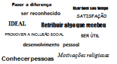

Razões para Voluntariar que vão além do “fazer o bem”
03 de Abril de 2017 às 07:00
Fazer o bem faz bem! Faz bem para o espírito e para o corpo também Publicado no periódico Psychology and Aging e divulgado no Huffington Post – um estudo científico referente a mudanças de pressão arterial em 1.164 adultos com idade entre 51 e 91 anos. Os adultos que passaram pelo menos 200 horas trabalhando como voluntários tinham 40% menos chances de sofrer com a pressão alta em comparação com aqueles que não se envolveram com o voluntariado, independente da ação específica escolhida por eles!
Porque colocar o voluntariado na vida talvez seja o maior desafio e a questão mais importante para dar esse primeiro passo! É necessário compreender que não há motivo elegante, especial ou mais importante! Será aquele que é relevante para você e que faz sentido na sua vida!
O que não faltam oportunidades de voluntariado espalhadas no mundo.
Coloque o voluntariado na sua agenda!
O que você precisa é uma razão, um MOTIVO para a AÇÃO!
Uma motivação!
Porque colocar o voluntariado na vida talvez seja o maior desafio e a questão mais importante para dar esse primeiro passo! É necessário compreender que não há motivo elegante, especial ou mais importante! Será aquele que é relevante para você e que faz sentido na sua vida!
O que não faltam oportunidades de voluntariado espalhadas no mundo.
Coloque o voluntariado na sua agenda!
O que você precisa é uma razão, um MOTIVO para a AÇÃO!
Uma motivação!

- Fazer bem para a saúde: existem inúmeros trabalhos científicos e estudos que comprovam que o voluntariado promove o bem estar físico e mental. Pesquisa que envolveu 2,7 mil pessoas, professores da Universidade de Harvard, nos Estados Unidos, apontam que ser voluntário faz bem ao coração e ao sistema imunológico, além de aumentar a expectativa de vida e a vitalidade de maneira geral. A química é simples. Ao perceber a felicidade e a gratidão dos outros, o cérebro libera endorfina, morfina natural produzida pelo organismo e responsável pela sensação de prazer. Por atuar no sistema nervoso, a endorfina diminui a sensação de dor e as chances de a pessoa adoecer.
- Colocar a “mão na massa” fazendo aquilo que gosto de fazer: todos realizam no seu dia a dia, seja no trabalho ou nas tarefas domésticas, coisas que dão alegria e prazer e outras que não agradam nem um pouco. O voluntariado permite escolher e dedicar algumas horas para algo que realmente dá satisfação e alegria.
- Ser solidário: ajudar quem precisa, cuidar do outro, ter a empatia de se colocar no lugar do outro, com suas demandas e carências e ter a compreensão de que maneira pode contribuir e ajudar. O voluntário vive a solidariedade.
- Conviver com realidades muito distintas: a desigualdade social deve ser colocada como meio e fim estratégico de uma agenda global.Em tempo de profundas mudanças climáticas que estão trazendo enormes consequências econômicas, sociais e ambientais, é mais do que necessário, é imprescindível repensar o modelo de produção e consumo vigente. O planeta não suporta mais o uso intensivo dos recursos naturais insustentáveis. Existem também a crise econômica e financeira e as questões de empregabilidade e renda. Portanto, somente uma forte articulação global da sociedade civil poderá ter efeito interno adicional em cada país para que os governos assumam compromissos globais. As Nações Unidas conclama todos os atores sociais e empresariais a reforçarem suas ações e parcerias em prol dos 17 objetivos de desenvolvimento sustentável ( ODS), para que metas e resultados sejam atingidos até 2030. Todos podem participar e contribuir para diminuir as desigualdades sociais; promover a inclusão social; a erradicação da pobreza; a promoção da igualdade entre gêneros e racial; a proteção ambiental; a valorização da educação e saúde; a promoção das energias renováveis em direção ao desenvolvimento sustentável; meios de implementação e financiamento da sustentabilidade. Tudo isso aliado às sociedades pacíficas e inclusivas (agenda de governança, Estado de direito, violência). Certamente existe uma causa que faz todo sentido poder contribuir e participar.
- Elevar a auto estima: uma das dicas para elevar a auto estima é colocar no dia a dia algo que deixe a pessoa feliz. Podem ser coisas simples mas que darão sentido e prazer. O trabalho voluntário promove um sentimento de respeito, confiança e autoconhecimento presentes em pessoas de auto estima elevada.
- Conhecer pessoas e ampliar a sua rede de contatos: fazer amigos e conhecer pessoas que possuem valores coincidentes com os seus é mais um bom motivo para voluntariar. Essa rede é fortalecida pela identidade com a causa e propósito comum.
- Provocar um Impacto positivo e relevante na sua comunidade: o voluntariado é ferramenta a disposição de qualquer pessoa para o exercício da cidadania, de participação na melhoria de sua comunidade, cidade, sociedade. Alguém consciente dos desafios, mas disposto a contribuir e ajudar quem precisa.
- Adquirir habilidades para seu desenvolvimento pessoal e profissional: não existe quem faça uma atividade voluntária e não sai transformado! O voluntariado é atividade para aquisição de novos talentos a oportunidade de conhecer diferentes tipos de pessoas e ser capaz de realizar tarefas que você nunca fez. E é também desenvolvimento e maneira de aprimorara qualificações que as pessoas possuem mas não tem a chance seja profissionalmente ou no dia a adia de colocar em prática.
- Complementas o currículo: segundo pesquisa realizada pelo LinkedIn um em cada cinco empregadores contrata funcionários que prestam serviço voluntário. O voluntariado é reconhecido hoje com um diferencial curricular, de alguém que tem uma consciência comunitária.
- Usar de forma útil e produtiva o seu tempo: o voluntário realiza trabalho e compartilha talentos, mas o bem mais precioso que ele doa é o seu tempo. E oferecer tempo para a construção de uma sociedade mais justa e solidária é certamente uma maneira bem especial de usá-lo.
Silvia Maria Louzã Naccache, Graduada em ciências biomédicas pela Universidade Federal de São Paulo – UNIFESP, é coordenadora do Centro de Voluntariado de São Paulo –CVSP desde julho de 2003. Atua com voluntariado, terceiro setor e responsabilidade social. É Conselheira voluntária da Associação Vaga Lume e membro organizador do Grupo de Estudos de Voluntariado Empresarial.
Publicado por

Notícias mais populares
Gestão
Em agosto de 2017, a revista ÉPOCA e o Instituto Doar divulgaram a primeira ediç&...
Contexto e tendências
Criado para tornar mais transparentes as parcerias entre a administração públic...
Profissional captador
A captação de recursos é fundamental para a sustentabilidade de uma organiza&cc...